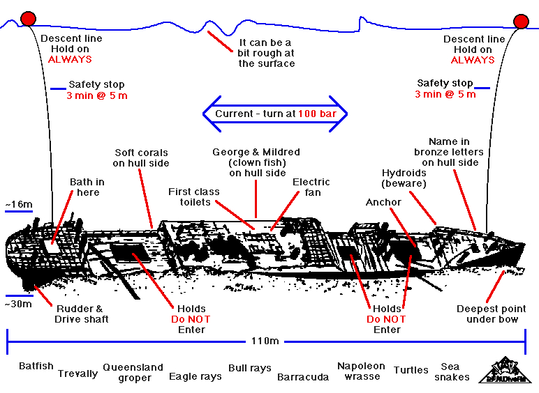

S.S. Yongala
The Yongala Story
- Built for the Adelaide Steamship Company in Newcastle-on-Tyne. Launched 29th April 1903. Sister ship to the Grantala.
- Arrived in Sydney December 1903. Initially used for coastal shipping between Melbourne and Fremantle (Western Australia). Route extended to Brisbane in 1906. Moved onto the Melbourne - Cairns route in 1907.
- Final voyage left Melbourne for Cairns on 14th March 1911, captained by William Knight. Passed through Sydney on 18th March, Brisbane on 21st March, and arrived at the Flat Top anchorage at Mackay on 23rd March.
- Missed the meteorological warning of cyclonic conditions, and left Mackay at 1:40pm on 23rd March, with 49 passengers, 72 crew, a race horse "Moonshine", a Lincoln bull, and assorted general cargo.
- The Cooma, also at Flat Top, received the meteorological warning and delayed departure.
- The Yongala was last sighted from the lighthouse on Dent Island, at 6:35pm.
- Expected in Townsville at 6:00am on 24th March, but had not arrived by the time the Cooma arrived in the morning of the 25th. A search was immediately started.
- The search lasted until the 28th March, when debris was found at Cape Bowling Green.
- The Yongala wreck was found in:
- August 1911 by the Norna, a private schooner, but not dived due to strong current;
- 1943 by navy mine sweepers;
- June 1947 by the Lachlan, a navy ship with submarine detecting equipment;
- August 1958 by the Cooma, doing a private search.
- First dived in August 1958 from the M.V. Australia, a private boat.
The Yongala Dive
